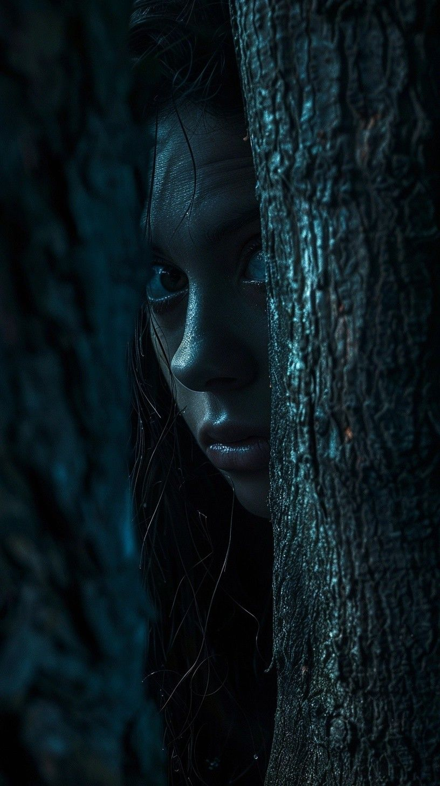
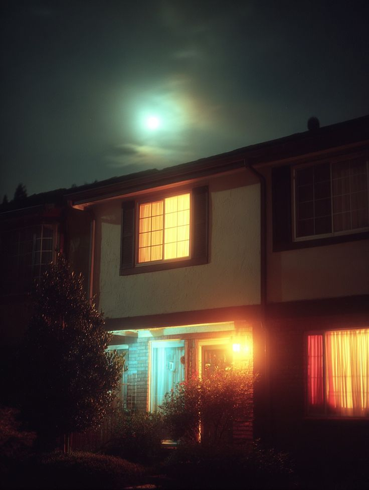

22B : 1-3 : La panique te saisit
22B : 1-3 : La panique te saisit
22B : 1-3 : La panique te saisit
22B : 1-3 : La panique te saisitLa femme vous conduit jusqu'à une clairière cachée derrière les roseaux. Un cercle de coussins entoure un petit autel couvert de bougies violettes.
- Ce soir c'est la Lune des Brumes, annonce-t-elle. Une pleine lune en Scorpion. Les frontières sont plus fines, et parfois... les démons remontent à la surface.
Tu n'aimes déjà pas cette phrase.
Elle distribue ensuite à chacun une petite fiole de verre mauve ornée d'une lune translucide.

- Buvez.
Tu hésites, mais tout le monde le fait... Alors tu te lances à ton tour.
Le goût est amer, presque ferrugineux. La vendeuse allume de la sauge, puis le tambour commence.
Poum.
Poum.
Poum.

Très vite, quelque chose se dérègle. Le son devient déformé et fort, ton cœur accélère, puis accélère encore. Les arbres se rapprochent et vous enserrent de leurs mains squelettiques. Tu aperçois une femme qui retire sa peau comme une robe. Puis un homme dont le visage fond lentement pour révéler un crâne couvert de symboles. Une voix murmure ton nom. Tu te retournes : personne. Ton souffle devient court, et ton cœur bat maintenant si fort que tu es persuadée que les autres peuvent l'entendre. Soudain une pensée atroce surgit : et si tout cela était réel ?
Tu regardes les autres participants. Ils semblent parfaitement calmes. Peut-être jouent-ils un rôle. Peut-être savent-ils quelque chose que tu ignores. Peut-être que cette femme t'a attirée ici exprès. Une vague de panique te submerge... Tes doigts s'engourdissent et ton champ de vision se rétrécit. Tu es persuadée que tu vas t'évanouir. Voire pire, mourir ici, entourée d'étrangers, au milieu de nulle part.

Puis le tambour cesse brutalement, et le silence retombe, emplissant la clairière de sa vacuité.
La vendeuse pose simplement une main sur ton épaule.
- Ça arrive parfois lors de la première lune.
Tu n'es pas certaine de la croire. Lorsque tu quittes finalement le
lac, tes jambes tremblent encore. Tu presses le pas vers la maison
d'Emma. Tu as besoin de parler...
